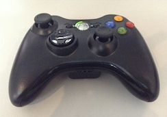

Joystick
El soporte para joysticks nos permite controlar actores usando varios modelos de mandos usb, por ejemplos los de xbox o similares:

Obtener dispositivos conectados
El primer paso para obtener acceso a los joysticks es listar
los dispositivos conectados con la función listar. Por ejemplo
en este caso hay un solo mando usb conectado:
» pilas.pad.listar()
['Wireless 360 Controller']
Acceder a los controles
Cuando pilas-engine detecta el primer joystick, todos los eventos
que genera el joystick se almacenarán en el objeto pilas.pad. Así
que el acceso a las palancas o los botones se puede hacer directamente
desde ahí.
El control de posición analógico se puede acceder directamente con
las variables x e y
» pilas.pad.x
0
» pilas.pad.y
0
y si se pulsa el pad, las variables retornarán un valor entre -1 y 1
dependiendo del eje. En el siguiente caso, el movimiento indica que el pad
se movió para arriba a la derecha:
» pilas.pad.x
0.999123
» pilas.pad.y
1
Acceso a eventos
También se puede acceder al joystick mediante eventos, para que pilas nos informe el estado del control de forma mas directa.